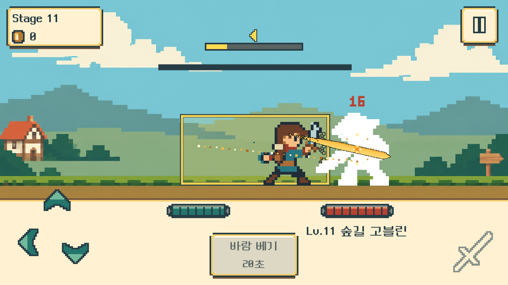
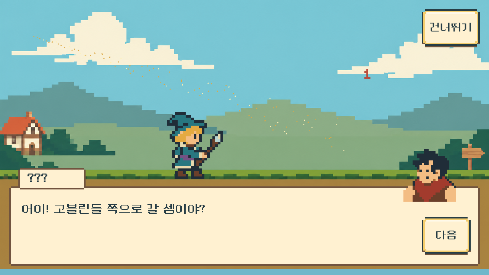
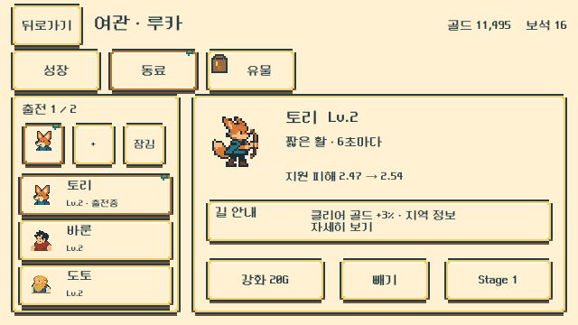

함께 달리는 동료
5종의 Idle·Attack·Run 15클립, 총98프레임. 새 계정은2토리·12바룬을 만나고, 이전 저장에서 이미 만난 리나·도토도 동료와 서비스를 유지합니다. 모모 아트가 있다는 사실은42스테이지 플레이 구현을 뜻하지 않습니다.
UNITY · V0.9.4 · 2026-10-24
동료·회복력과 Stage5 행동 가이드, 좌우 화자 초상, 실제 도트 ParticleSystem을 저장 씬·프리팹과 Windows 실행판에 연결했습니다.
5종의 Idle·Attack·Run 15클립, 총98프레임. 새 계정은2토리·12바룬을 만나고, 이전 저장에서 이미 만난 리나·도토도 동료와 서비스를 유지합니다. 모모 아트가 있다는 사실은42스테이지 플레이 구현을 뜻하지 않습니다.
예고와 후퇴·준비·전진은 실제 적중 시각을 따릅니다. Stage5의 첫 두 타는 위 회피→아래 쳐내기의 새 입력을 확인하고, 이후 정상 속도 전투로 이어집니다.
회복력은 다섯 번째 성장 스탯입니다. 일반·중간 보스·보스 모두 처치 시 정량 회복을 한 번 적용하며, 보스 추가 완전 회복은 없습니다. 동료 편성·강화·제작·예약은 Core 견적과 확인을 거칩니다.
플레이어 발화는 왼쪽 초상과 그 오른쪽 이름표, NPC 발화는 오른쪽 초상과 왼쪽 이름표를 사용합니다. 기존9종과 모모의24px 초상을 연결했습니다. 스킬·동료 발사체·강화·축복·회복에는 실제 ParticleSystem을 사용하며, 효과는 별도 전투 판정을 만들지 않습니다.
현재 실행 범위는1~20스테이지입니다. 21~50 전투, 새 계정 도토22·리나32·모모42 첫 만남과 다음 회차는 후속 제작입니다. 기존 Dragon 저장 경로를 유지하며 새 저장만 Stage1부터 시작합니다.



승인된 변경 범위 QA · PASS WITH LIMITS. candidate02의 두 해상도 통합·재시작 4프로세스 및 영향 없는 시각 관측을 채택했습니다. candidate03에서는 바룬의 Stage12 대화만 3캐릭터·2해상도, 30페이지로 재검증해 초상화 오류를 해결 확인했습니다.
통합 기록: Core 217 assertions · 데이터 28 tests · 실제 Unity EditMode 198 passed. 이 수치는 최종 화면 campaign과 별도입니다.
최종 campaign 2개 프로세스 통과. 이 숫자는 전체 과거 후보·채택 증거의 합계가 아닙니다. 일반 배포판은 패키지 검증이며 별도 전체 플레이 통과로 확대하지 않습니다.